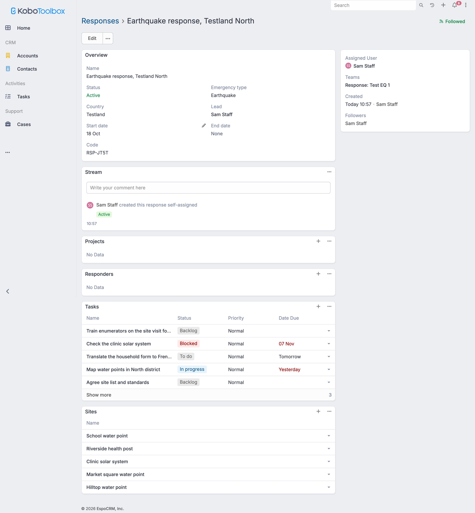
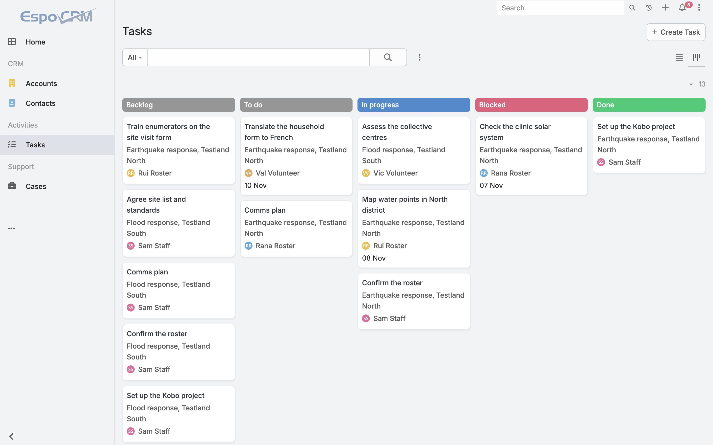
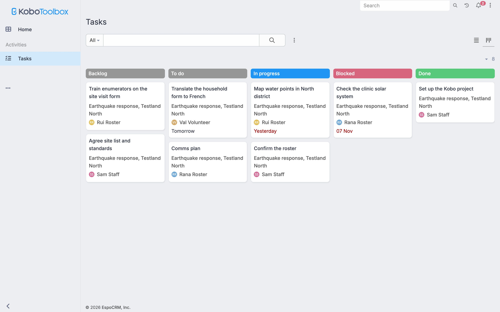
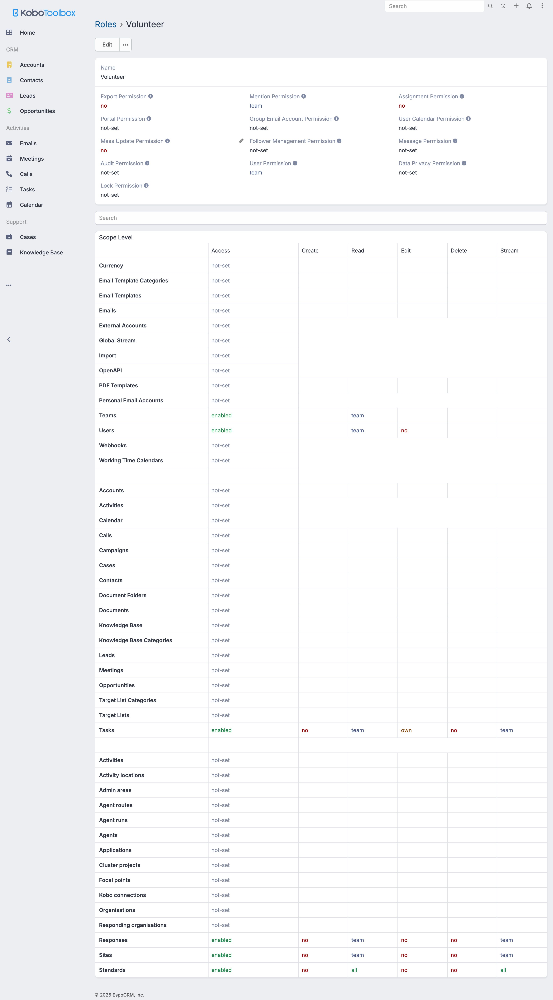
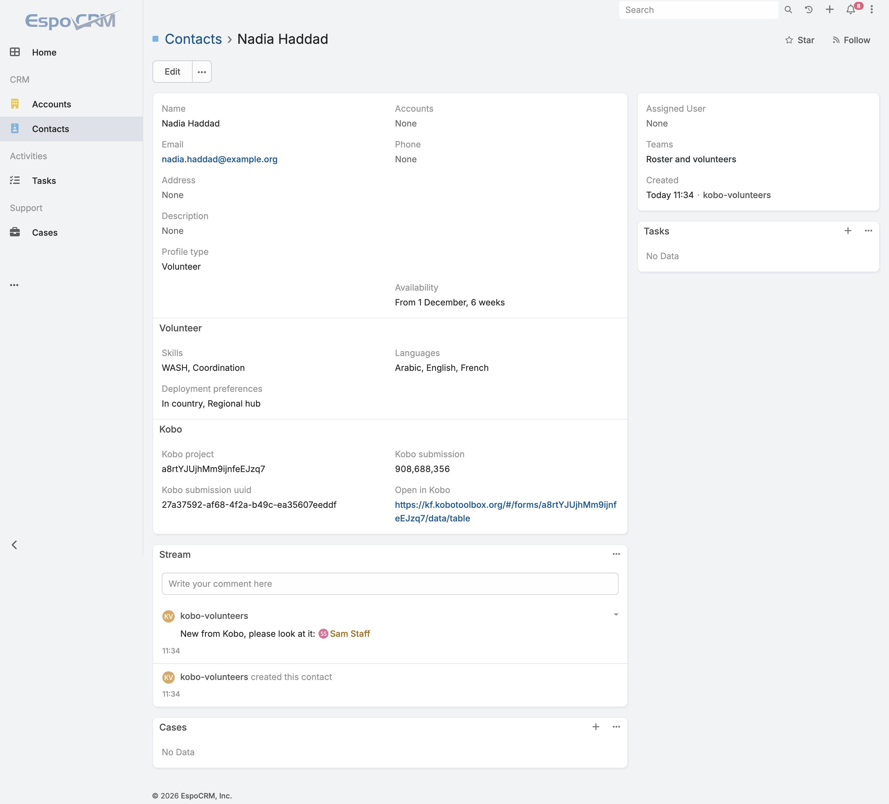

A new response
Staff create a response (Responses → Create) with its team (Response: …, one per response), its lead, the emergency type and the country. It starts with four tasks, assigned to the lead, in Backlog:
- Set up the Kobo project
- Confirm the roster
- Comms plan
- Agree site list and standards
The response's page lists its tasks and its sites.


Every task of a response is in the response's team, whatever team it was given. That's what keeps it on that response's members' board and nobody else's.
The board
Tasks → the board button (top right). The columns are Backlog, To do, In progress, Blocked, Done; cancelled and deferred tasks are left off. Drag a card to move it. Each card shows its response, its assignee and its due date.


Saved filters are each person's own in EspoCRM; there's no shared "board of response X" without custom code. People in one response don't need one: their board only has that response's tasks.
Roster experts and volunteers
They're ordinary EspoCRM users, with the role Roster Expert or Volunteer and their responses' teams. They don't need an email account or a GitHub account, just their EspoCRM login.



| Roster expert | Volunteer | |
|---|---|---|
| See their responses' board, tasks and sites | Yes | Yes |
| Move and edit their own tasks | Yes | Yes |
| Comment on any task of their responses | Yes | Yes |
| Create tasks | Yes | No |
| Give a task to someone in the response | Yes | No |
| Edit someone else's task | No | No |
| See cases, contacts, accounts, other responses | No | No |
| See users outside their responses | No | No |


Volunteer sign-ups from Kobo
The Volunteer availability form asks for:
- name and email;
- skills and languages;
- availability and deployment preferences.
Each sign-up becomes a contact with the profile Volunteer in the Roster and volunteers team, and staff are notified. Someone who signs up again with the same email updates their contact; it doesn't make a second one.


Making a volunteer a user, so they can be given tasks, is a person's decision, not automatic (see Running it).
Several people on a task
A task has one assignee and any number of collaborators, all from the response's team (EspoCRM refuses anyone else). In EspoCRM 10, collaborators can read and comment on the task, but not move or edit it: the assignee does. When a task is given to someone else, the previous assignee stops being a collaborator, so they don't keep it.
Leaving, and closing a response
Taking someone out of a response's team takes the response and the others' tasks away from them straight away, even in a browser they're already signed in to. EspoCRM still lets them see the tasks assigned to them, though, so reassign their open tasks when someone leaves.
Setting a response to Closed gives all its tasks back to its lead, without collaborators. Then take its roster and volunteers out of its team: the response and its tasks are left to staff.